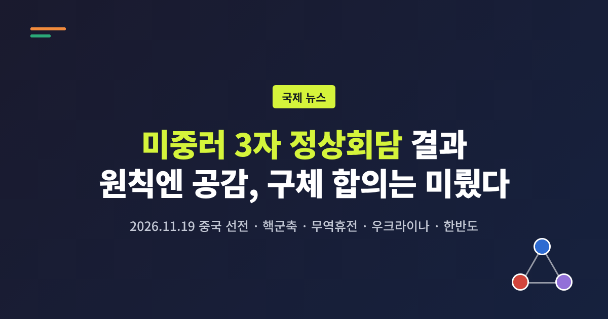
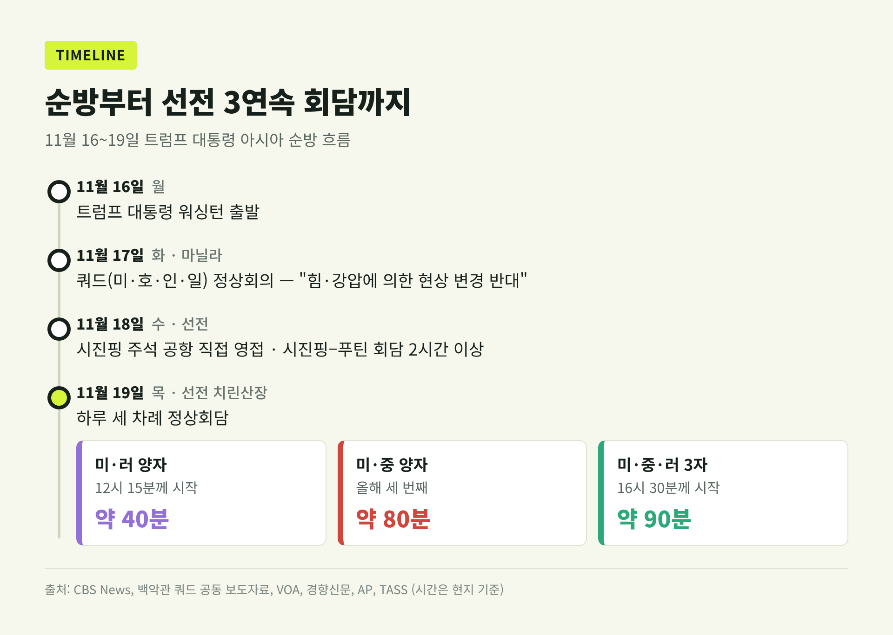
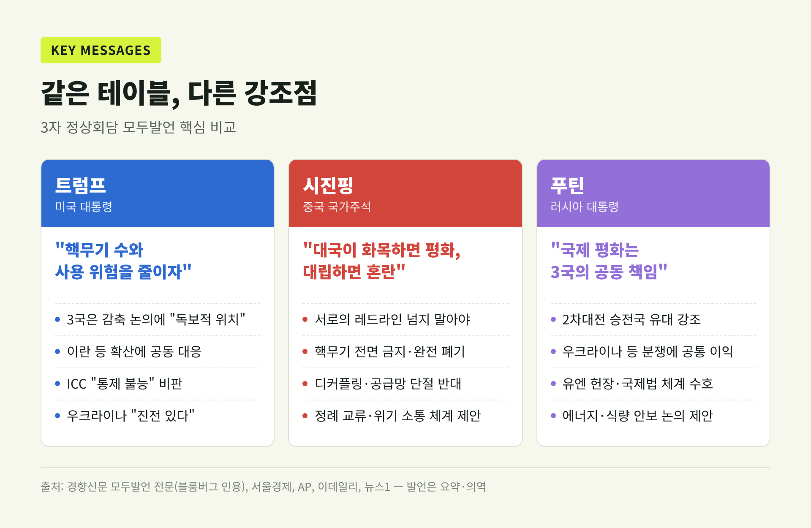
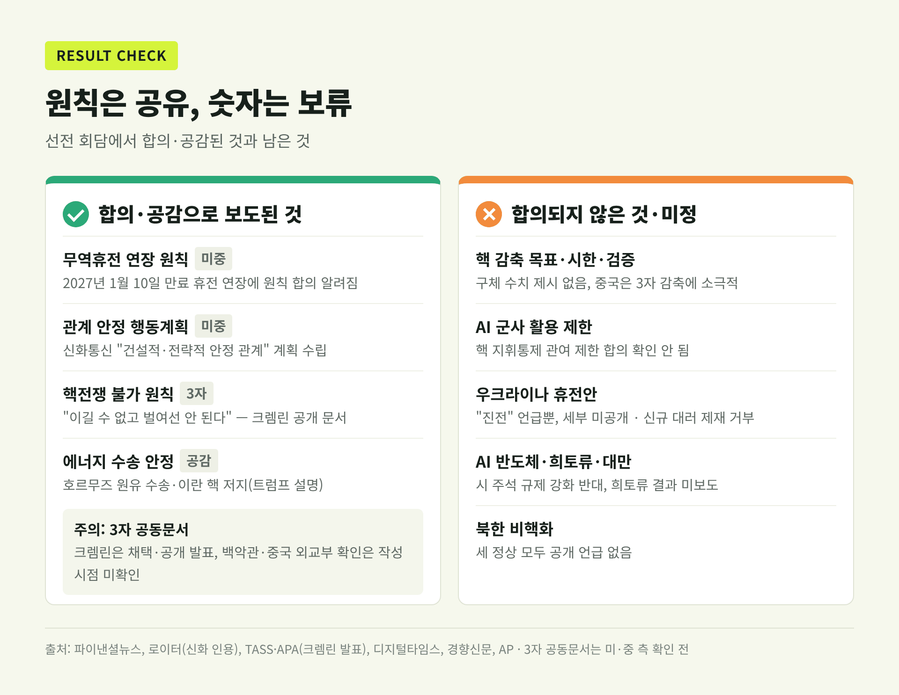
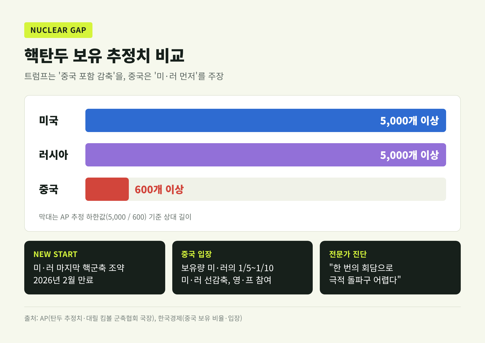
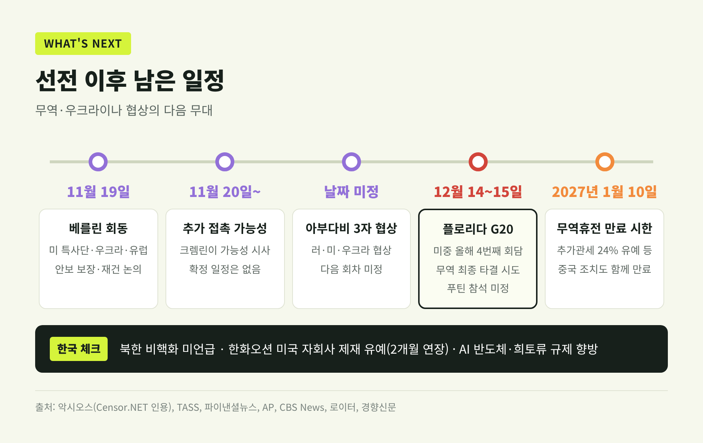

미중러 3자 정상회담 결과, 원칙엔 공감했지만 구체 합의는 미뤘다

이번 글에서는 11월 19일 중국 선전에서 열린 미중 정상회담과 사상 첫 미·중·러 3자 정상회담의 결과를 정리해 보겠습니다. 무엇이 합의됐고 무엇이 남았는지, 각국의 셈법과 한반도에 미칠 영향까지 차례로 짚습니다.
3줄 요약
- 트럼프·시진핑·푸틴이 선전 치린산장에서 약 1시간 30분간 처음으로 한자리에 앉았습니다. 핵위험 감소와 '강대국 공동책임'이라는 원칙에는 목소리를 맞췄지만, 감축 목표·시한 같은 구체 합의는 나오지 않았습니다.
- 앞서 열린 미중 양자회담에서는 내년 1월 10일 끝나는 무역휴전을 연장하는 데 원칙적으로 합의한 것으로 알려졌습니다. 세부 타결은 12월 플로리다 G20으로 넘어갔습니다.
- 북한 비핵화는 세 정상 누구도 공개 언급하지 않았습니다. 한국으로서는 '빠진 의제'가 숙제로 남은 셈입니다.
■ 선전에서 무슨 일이 있었나
하루에 세 번의 정상회담이 이어졌습니다.
먼저 트럼프 대통령과 푸틴 대통령이 현지시간 낮 12시 15분께 마주 앉았습니다(VOA). 약 40분간의 회담이었고, 경향신문은 이를 "예정에 없던" 회담이라고 전했습니다. AP는 2025년 알래스카 회담 이후 두 정상의 첫 정식 회담이라고 짚었습니다.
이어 트럼프·시진핑 양자회담이 약 80분간 열렸습니다. 5월 베이징, 9월 워싱턴에 이은 올해 세 번째 만남입니다.
오후 4시 30분께 3자 회담이 시작됐습니다. 원탁 가운데 시진핑 주석이 앉고, 왼쪽에 푸틴, 오른쪽에 트럼프가 자리했습니다(경향신문). 공개 발언은 10여 분, 나머지는 비공개였습니다. 회담 뒤 세 정상의 공동 기자회견은 없었습니다(TASS).

직전 흐름도 눈여겨볼 만합니다. 트럼프 대통령은 16일 워싱턴을 떠나 17일 마닐라에서 미국·호주·인도·일본 쿼드 정상회의를 열었습니다. 쿼드 공동 보도자료에는 "힘이나 강압에 의한 현상 변경 반대"와 "자의적 수출 제한 등 경제적 강압 우려"가 담겼습니다. 중국을 직접 거명하지는 않았지만, 결이 분명한 문장입니다.
다음 날 선전에 도착한 트럼프 대통령을 시진핑 주석이 공항에서 직접 맞았습니다. 호주 ABC는 시 주석이 방문 정상을 공항에서 포옹으로 맞은 것은 처음이라고 분석했습니다. 같은 날 시진핑·푸틴 두 정상은 2시간 넘게 따로 회담했습니다.
견제의 메시지를 낸 다음 날, 최고 수준의 환대를 받은 셈입니다.
■ 세 정상은 무엇을 말했나
같은 테이블에 앉았지만 강조점은 서로 달랐습니다. 서울경제는 세 정상이 각자의 우선순위만 부각하며 엇갈린 메시지를 냈다고 평가했습니다.
트럼프 — "핵을 줄이자" 트럼프 대통령은 "우리는 정말 역사를 만들고 있다"며 말문을 열었습니다. 세 나라가 핵무기 수를 줄이고 사용 위험을 낮출 "독보적인 위치"에 있다고 했습니다. 다른 나라의 핵 확산에 함께 맞서야 한다며 이란을 예로 들었습니다. 다만 "일단 핵무기를 가지면 없애기가 매우 어렵다"는 말도 덧붙였습니다(AP).
국제형사재판소(ICC)도 겨냥했습니다. ICC를 '불량 세계주의자 기구'의 대표로 꼽으며 "통제 불능 상태"라고 비판했습니다. 경향신문은 미국·중국·러시아가 모두 ICC 비회원국이라는 점을 함께 짚었습니다. ICC는 푸틴 대통령에게도 체포영장을 발부한 바 있습니다.
시진핑 — "대국이 화합해야 세계가 평안하다" 시 주석은 "강대국이 화목하면 세계에 평화가 오고, 대립하면 혼란에 빠진다"는 역사적 교훈을 꺼냈습니다(경향신문 전문, 블룸버그 인용). 핵무기는 전면 금지·완전 폐기해야 하며, 핵전쟁은 이길 수 없고 일어나서도 안 된다고 했습니다. 핵전쟁을 인류 머리 위의 "다모클레스의 칼"에 빗대기도 했습니다(키이우포스트).
눈에 띄는 대목은 레드라인입니다. 시 주석은 강대국이 서로의 레드라인을 넘어선 안 되며, 주권·영토 보전·핵심 이익을 존중해야 한다고 말했습니다. 냉전적 사고, 디커플링, 공급망 단절도 버려야 한다고 했습니다. 서울경제는 이를 미국의 대중 수출통제를 겨냥한 발언으로 읽었습니다. 정례 고위급 교류와 위기 소통 체계도 제안했습니다.
푸틴 — "평화는 공동의 책임" 푸틴 대통령은 세 나라가 제2차 세계대전 승전국이라는 지위를 넘어 국제 평화와 안보에 대한 "공동의 책임으로 연결돼 있다"고 했습니다. 우크라이나 분쟁을 포함한 지역 분쟁 해결에 공통 이익이 많다고 강조했고, 에너지·식량 안보 논의도 제안했습니다.

■ 합의된 것과 합의되지 않은 것
결과를 한 줄로 줄이면 "원칙은 공유, 숫자는 보류"입니다.
미중 양자회담에서 나온 것 파이낸셜뉴스는 두 정상이 내년 1월로 예정된 무역휴전의 연장에 원칙적으로 합의한 것으로 알려졌다고 보도했습니다. 현재 휴전은 2025년 10월 부산 회담에서 시작됐고, 9월에 한 차례 두 달 연장돼 2027년 1월 10일까지 이어집니다. 중국도 11월 9일 대미 추가관세 24% 유예 등을 같은 날짜까지 늘렸습니다(로이터).
중국 신화통신은 이번 회담을 "긍정적이고 건설적"이라고 평가했습니다. 두 정상이 "건설적이고 전략적으로 안정적인 관계"를 위한 행동계획을 마련하기로 했다고도 전했습니다(로이터 전재). 시 주석은 "협력 목록은 늘리고 문제 목록은 줄이자"고 말했습니다.
트럼프 대통령은 호르무즈 해협 원유 수송 보장과 이란 핵무기 저지에 양국이 "매우 강한 공감대"가 있다고 했습니다. 다만 이는 미국 쪽 설명이며, 중국 측이 같은 표현으로 확인했는지는 이번 취재에서 찾지 못했습니다.
미중 사이에 풀리지 않은 것 첨단 AI 반도체 규제 강화를 두고는 시 주석이 반대 입장을 밝힌 것으로 전해졌습니다(파이낸셜뉴스). 희토류 수출통제 논의 결과는 보도되지 않았습니다. 미국 당국자들은 중국이 2025년에 약속한 농산물 구매 확대와 희토류 수출 제한 완화를 아직 다 지키지 않았다고 보고 있습니다(AP). 대만을 두고는 시 주석이 미국에 "올바른 일"을 하라고 요구했습니다. 신화는 트럼프 대통령이 "대만 독립을 지지하지 않는다"고 말했다고 전했지만, 미국 측 공식 확인은 나오지 않았습니다.
3자 회담의 결과물 여기서는 보도가 엇갈립니다. 크렘린의 페스코프 대변인은 공동성명이 "채택됐고 1시간 안에 공개될 것"이라고 말했습니다(TASS). 아제르바이잔 APA 통신은 크렘린이 공개한 문서를 '평화 선언'으로 소개했습니다. 핵전쟁은 이길 수 없고 결코 벌여서는 안 된다는 문장, 유엔 개혁, 에너지 공급 안정, ICC 같은 기구가 권한을 남용해서는 안 된다는 내용이 담겼다고 합니다.
반면 그보다 이른 시각의 디지털타임스 보도는 "공동 성명이나 평화 선언은 없었다"고 썼습니다. NBC도 회담이 "즉각적인 성명 없이" 끝났다고 전했습니다. 백악관과 중국 외교부가 같은 문서를 확인했는지는 작성 시점까지 확인되지 않았습니다.
어느 쪽이든 공통점은 있습니다. 핵탄두를 몇 개, 언제까지 줄일지 정한 내용은 없었습니다. 회담 전 가장 합의 가능성이 크다던 'AI의 핵무기 지휘통제 관여 제한'도 결론이 확인되지 않았습니다(디지털타임스).

■ 핵군축 제안의 무게
트럼프 대통령의 핵군축 제안에는 배경이 있습니다. 미국과 러시아 사이의 마지막 핵군축 조약인 신전략무기감축조약(New START)이 올해 2월 만료됐습니다. 트럼프 대통령은 중국까지 포함한 새 협정을 원한다고 밝혀 왔습니다.
문제는 보유량 격차입니다. AP에 따르면 미국과 러시아는 각각 5,000개 이상의 핵탄두를 가진 것으로 추정됩니다. 중국은 600개 이상입니다. 한국경제는 중국 보유량을 미·러의 5분의 1에서 10분의 1 수준으로 봤습니다.
중국이 3자 감축 협상에 소극적인 이유가 여기에 있습니다. 미·러가 먼저 줄이고, 영국·프랑스도 함께해야 한다는 것이 베이징의 논리입니다(한국경제). 시 주석이 '핵무기 전면 폐기'라는 큰 원칙을 꺼낸 것도, 구체적인 숫자 협상은 피하면서 논쟁에서 물러서지 않으려는 선택으로 읽힙니다. 경향신문은 중국이 "논쟁을 피하지 않기로 한 것으로 보인다"고 표현했습니다.
미국 군축협회의 대릴 킴볼 국장은 이번 회담이 "기껏해야 장기 협상 과정의 시작"이 될 수 있다고 했습니다. 한 번의 회담으로 극적인 돌파구가 나오긴 어렵다는 진단입니다(AP).

■ 우크라이나, 그리고 협상장 밖의 사람들
이번 회담에서 가장 예민한 의제는 우크라이나였습니다.
백악관은 13일 유럽의 비판을 의식해 우크라이나를 의제에서 빼겠다고 했습니다. 하지만 실제로는 테이블에 올랐습니다(경향신문). 트럼프 대통령은 "뭔가 진전이 이뤄지고 있다"고 했고, 푸틴 대통령도 공통 이익을 강조했습니다. 그러나 휴전 조건이나 평화안 같은 세부 내용은 공개되지 않았습니다. AP는 트럼프 대통령이 새 대러 제재는 거부했다고 전했습니다.
당사자인 우크라이나와 유럽은 협상장에 없었습니다.
젤렌스키 대통령은 우크라이나 없이 열린 트럼프·푸틴 회담을 "실수"라고 했습니다. 그러면서 "중국과 미국이라면 한 번의 회담으로 푸틴을 멈출 힘이 충분하다"고 말했습니다(NBC 인터뷰, 키이우포스트 인용). 시비하 외무장관은 강대국이 세력권을 나누는 시대로 돌아가는 듯한 신호를 경계했습니다.
유럽의 걱정도 비슷합니다. 메르츠 독일 총리는 13일 "제발 놀랄 일은 없게 해 달라. 유럽 팀에, 우크라이나와 함께 있어 달라"고 공개적으로 당부했습니다. 일부에서는 이번 만남이 '제2의 앵커리지'가 될 수 있다는 우려도 나왔다고 전했습니다(나샤니바).
중국의 태도는 조금 결이 다릅니다. 시 주석은 분쟁 당사자들이 협상 테이블에 앉아야 한다고 했지만, 우크라이나를 직접 지목하지는 않았습니다(디지털타임스, 로이터 인용). 서울경제는 이를 당사국을 뺀 강대국 거래에 대한 중국의 우려가 담긴 것으로 해석했습니다.
같은 날 베를린에서는 미국 위트코프·쿠슈너 특사가 우크라이나·유럽 대표와 만나 안보 보장과 전후 재건을 논의할 예정이었습니다(악시오스 인용). 선전과 베를린, 두 갈래의 대화가 동시에 돌아간 하루였습니다.
■ 한국과 한반도에는 어떤 의미인가
가장 크게 남은 공백은 북한입니다.
트럼프 대통령은 핵 비확산을 말하면서 이란은 거론했지만 북한은 언급하지 않았습니다. 세 정상 모두 마찬가지였습니다(경향신문). 회담 전 김정은 국무위원장의 선전 방문이나 북미 회동 가능성이 거론됐지만 성사되지 않았습니다.
여기에는 두 가지 해석이 가능합니다. 한쪽에서는 핵보유국 정상들이 모인 자리에서 북핵이 빠진 것 자체가 우려스럽다고 봅니다. 북한이 비핵화 의제가 오르면 대화하지 않겠다며 핵보유 인정을 요구해 온 상황이라 더 그렇습니다(아시아경제). 다른 쪽에서는 한국이 없는 자리에서 한반도 문제가 다뤄지지 않은 것이 오히려 다행이라는 시각도 있습니다. 회담 전 '제2의 얄타'를 경계했던 이유와 맞닿아 있습니다.
정부는 이 점을 의식해 왔습니다. 디지털타임스에 따르면 청와대는 회담 전 미국과 중국에 "제2의 얄타"가 돼서는 안 된다는 뜻을 전했습니다. 한 청와대 고위 관계자는 18일 "중국과 미국, 러시아의 생각이 다 똑같지는 않다"며 과거 얄타의 강대국들과는 처지가 다르다고 말했습니다(한국경제). 이재명 대통령은 18일 APEC 만찬에서 푸틴 대통령과 10여 분 대화하며 북핵 문제를 거론했고, 북한과의 대화 문이 다시 열려 항구적 평화체제로 이어지길 기대한다고 밝혔습니다.
워싱턴의 시각도 참고할 만합니다. 한국경제 워싱턴 특파원은 공동의 적도 없고 준비 기간도 짧아 1945년식 세력권 분할은 어렵다는 것이 워싱턴의 주류 시각이라고 전했습니다. 다만 미국이 우크라이나를 쉽게 포기하는 것처럼 보이면 대만과 북한 문제에 잘못된 신호가 될 수 있다는 우려도 함께 소개했습니다.
경제 측면에서도 연결 고리가 있습니다. 중국은 11월 9일 한화오션 미국 자회사 5곳에 대한 제재 유예를 두 달 더 연장했습니다(로이터). 미중 무역휴전의 향방이 한국 기업에도 직접 닿는다는 뜻입니다. 휴전이 연장되면 공급망 불확실성은 한숨 돌리겠지만, AI 반도체 규제와 희토류 문제는 여전히 남아 있습니다.
일본의 다카이치 총리는 일본의 이익이 훼손되지 않을 것으로 본다고 했습니다. 대만 대륙위원회도 "우리가 아는 바로는 대만은 초점이 아니다"라고 밝혔습니다. 주변국 모두 '무엇이 논의됐는가'만큼 '무엇이 빠졌는가'를 주시하고 있습니다.
■ 앞으로의 일정
이번 회담은 끝이 아니라 중간 점검에 가깝습니다.
- 11월 20일: 크렘린 우샤코프 보좌관은 "내일도 꽉 찬 업무일"이라며 추가 접촉 가능성을 열어 뒀습니다(TASS). 확정된 일정은 아직 없습니다.
- 우크라이나 협상: 러시아·미국·우크라이나 3자 협상은 아부다비에서 이어지지만, 다음 회차 날짜는 정해지지 않았습니다(우샤코프, 11월 16일).
- 12월 14~15일: 플로리다 트럼프 내셔널 도럴에서 G20 정상회의가 열립니다. 미중 정상의 올해 네 번째 회담이 예정돼 있고, 무역 쟁점의 최종 타결을 이 자리에서 시도할 방침입니다. 러시아도 초청됐지만 푸틴 대통령의 참석 여부는 미정입니다.
- 2027년 1월 10일: 미중 무역휴전과 중국 측 각종 유예 조치의 만료 시한입니다.

정리하면 이렇습니다.
예전에는 미·중·러 정상이 한자리에 앉는 것 자체가 상상하기 어려웠습니다. 이번에는 앉는 데까지는 성공했습니다. 그러나 핵 감축 숫자도, 우크라이나 휴전안도, 북한에 대한 한마디도 나오지 않았습니다. 호주 라트로브대의 닉 비즐리 교수가 회담 전 "화려한 의전과 사진은 많겠지만 결과는 많지 않을 것"이라고 내다본 것과 크게 다르지 않은 결과입니다.
그렇다고 의미가 없다고 단정하기도 이릅니다. 시 주석이 제안한 위기 소통 체계, 무역휴전 연장 원칙, 신화가 전한 미중 행동계획은 모두 12월 G20에서 구체화될지 시험대에 오릅니다.
— 선전은 합의의 자리가 아니라, 다음 협상의 출발선이었습니다.
이번 회담이 한반도에 득이 될지 묻는다면, 아직은 빈칸으로 남겨 둘 수밖에 없습니다. 그 빈칸을 채우는 일은 결국 협상장 밖에 있던 나라들의 몫입니다.
참고 자료
- 파이낸셜뉴스, 구체 합의보다 안정적 관리 택한 2개월 만의 미중 정상회담...무역회담 연장은 원칙적 합의 (2026-11-19) — https://fnnews.com/news/202611191640510566
- 파이낸셜뉴스, 美中 무역휴전 연장 가닥… 내달 G20서 최종 담판 (2026-11-19) — https://www.fnnews.com/news/202611191829166311
- 경향신문, 미·중·러 정상회담에서 ICC 때린 트럼프…핵 비확산 말하면서 북한 언급 안 해 (2026-11-19) — https://www.khan.co.kr/article/202611191858001/
- 경향신문, [전문]미·중·러 정상회담 각 정상 모두발언 (2026-11-19) — https://www.khan.co.kr/article/202611191950001/
- VOA 한국어, 트럼프·시진핑 정상회담…"우크라이나 전쟁 종식 협력" (2026-11-19) — https://www.voakorea.com/a/8225441.html
- 서울경제, 트럼프, 중러에 '핵 줄이자'…習 '서로 레드라인 건드려선 안돼' (2026-11-19) — https://m.sedaily.com/article/20116701
- 뉴스1, 트럼프 '핵군축' 시진핑 '대국 화합' 푸틴 '평화 공동책임'(종합2보) (2026-11-19) — https://www.news1.kr/world/northeast-asia/6360175
- 디지털타임스, [짚어봅시다] 사상 첫 미·중·러 정상회담… 합의는 없었다 (2026-11-19) — https://www.dt.co.kr/article/12096272
- 이데일리, 미중러 첫 정상회담…시 "핵전쟁 안돼" 트럼프 "핵확산 함께 막아야" (2026-11-19) — https://edaily.co.kr/News/Read?mediaCodeNo=257&newsId=04237766645647360
- 아시아경제, 사상 첫 미중러 3자 회담서 '北비핵화' 언급될까 (2026-11-19) — https://view.asiae.co.kr/article/2026111910111061121
- 한국경제, 제2의 얄타회담 우려?…靑 "미·중·러, 그 정도로 공통점 있지 않아" (2026-11-19) — https://www.hankyung.com/article/202611195971i
- 한국경제, 미중러 정상회담 '동상이몽'…"제2얄타 어렵다" 까닭은 (2026-11-19) — https://hankyung.com/article/202611196233i
- AP(KSTP 전재), Trump, Xi and Putin hold first-ever three-way talks (2026-11-19) — https://kstp.com/ap-top-news/ap-top-news-international/trump-xi-and-putin-hold-first-ever-three-way-talks-discussing-nuclear-arms-and-the-war-in-ukraine/
- Reuters(Yahoo 전재), China's Xi says US should do 'right thing' on Taiwan (2026-11-19) — https://www.yahoo.com/news/politics/articles/chinas-xi-says-us-thing-090834090.html
- Reuters(TimesLIVE 전재), China extends US trade truce by two months (2026-11-09) — https://www.timeslive.co.za/news/world/2026-11-09-china-extends-us-trade-truce-by-two-months/
- TASS, Russia-China-US summit adopts joint statement — Kremlin spokesman (2026-11-19) — https://tass.com/politics/2221371
- APA, Russia, China and US leaders adopt Declaration on Peace (2026-11-19) — https://en.apa.az/cis-countries/russia-china-and-us-leaders-adopt-declaration-on-peace-updated-537205
- Kyiv Post, Xi Warns Trump and Putin of Nuclear 'Sword of Damocles' (2026-11-19) — https://www.kyivpost.com/post/90581
- CBS News, Chinese President Xi greets Trump at airport ahead of planned summit with Putin (2026-11-18) — https://www.cbsnews.com/news/trump-asia-trip-trilateral-summit-putin-xi/
- ABC News(호주), APEC Summit live (2026-11-19) — https://www.abc.net.au/news/2026-11-19/trump-xi-putin-meeting-live-blog-apec-summit/107394202
- 백악관, Quad Leaders' Summit Joint Press Release (2026-11-17) — https://www.whitehouse.gov/briefings-statements/2026/11/quad-leaders-summit-joint-press-release/
- Nasha Niva, "Please, no surprises." Merz urged Trump to stand with Europeans (2026-11-14) — https://nashaniva.com/en/409237
- Censor.NET, Witkoff and Kushner to meet Ukrainian and European representatives in Berlin (2026-11-17) — https://censor.net/en/news/4034082/witkoff-kushner-plan-berlin-talks-on-ukraine-security-guarantees
- Focus Taiwan, Taiwan unlikely to be Trump-Xi-Putin topic (2026-11-19) — https://focustaiwan.tw/politics/202611190018
- 파이낸셜뉴스, 러 "미중러 정상회담 후 공동성명 전망…미러 양자회담도 추진" (2026-11-17) — https://www.fnnews.com/news/202611171004159033
- CBS News, Trump announces plans to host 2026 G20 summit at his Doral resort (2025-09-05) — https://www.cbsnews.com/news/trump-g20-summit-2026-doral-resort-florida